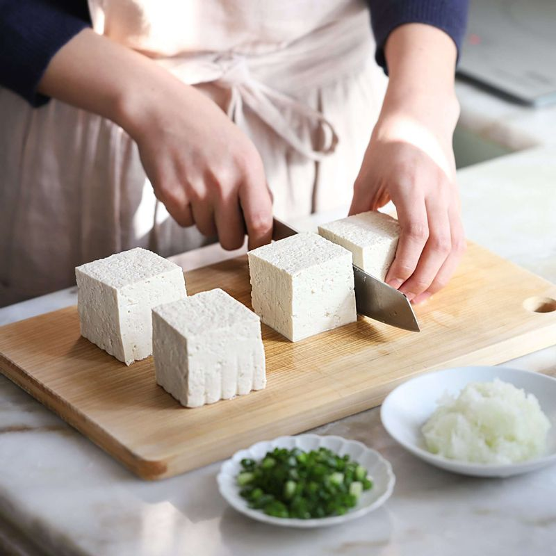
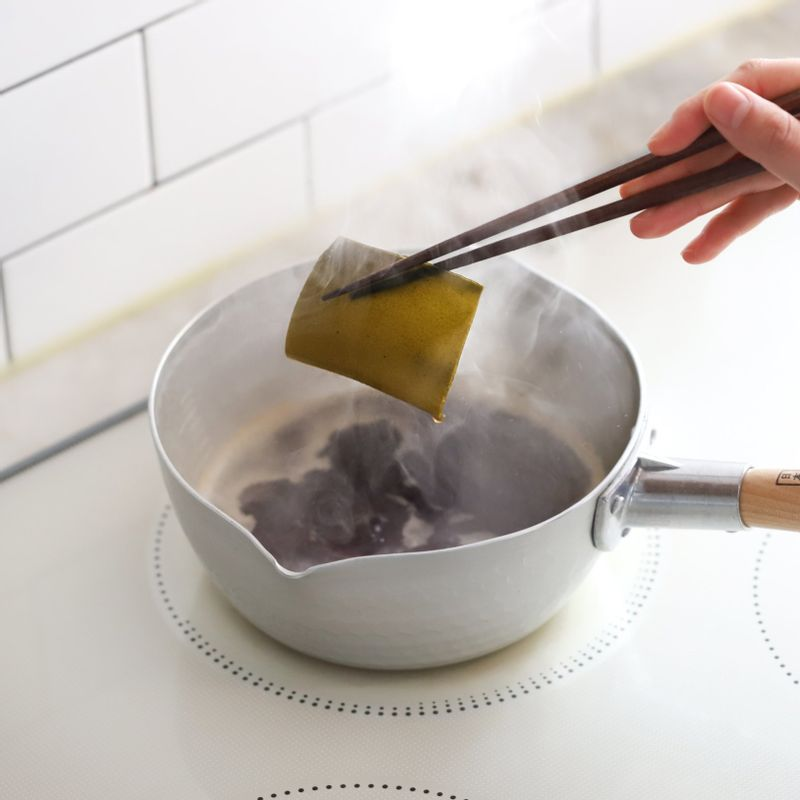
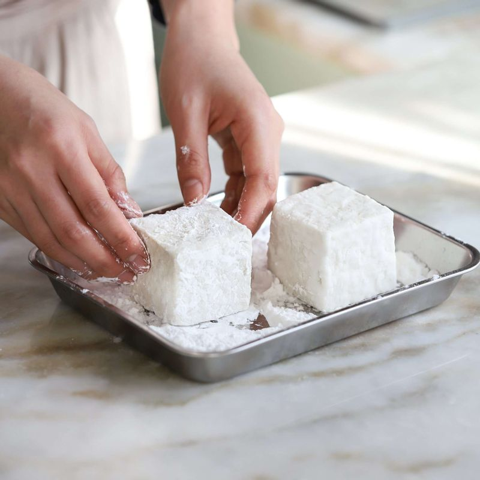
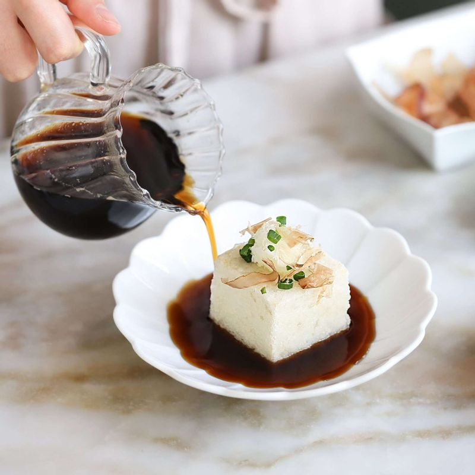

-

두부는 4등분으로 잘라 키친타월에 올려 물기를 제거해주세요. 실파는 송송썰고 무는 강판에 간 후 물기를 살짝 짜주세요.
-

냄비에 소스재료를 넣고 끓이다가, 끓어오르면 다시마를 건져내고 1분 정도 더 끓여 소스를 만들어주세요.
-

두부는 전분가루를 고르게 묻힌 후 170도 기름에서 바삭하게 튀겨주세요.
-

그릇에 튀긴두부를 담고 갈은 무와 가쓰오부시, 송송 썬 실파를 올린 후 소스를 부어주세요.
-
두부가 바삭한 상태일 때 맛있게 즐겨주세요.